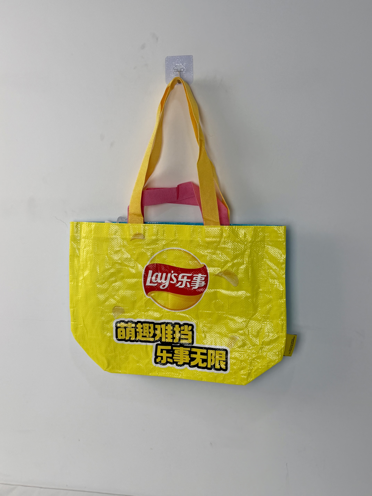

A vibrant yellow laminated woven tote designed for Lay's, featuring the iconic red-and-yellow logo lockup and bold campaign typography that turns grocery shopping into a brand statement.

Lay's is the world's best-selling potato chip brand, owned by PepsiCo and available in over 200 countries. In China, Lay's operates in an intensely competitive snack market where brand loyalty is built through constant product innovation, limited-edition flavors, and high-visibility promotional campaigns. The brand's signature yellow and red color scheme is among the most recognized visual identities in global FMCG.
When customers carry our bag through a supermarket, every other shopper should know exactly which brand they love. Visibility is everything in snack marketing.
This project was conceived as a seasonal promotional item tied to a China-market campaign celebrating playful snacking moments. Rather than a disposable plastic bag, Lay's specified a durable reusable tote that customers would continue using long after the initial purchase — extending brand impressions into grocery stores, campuses, and picnic settings.
The design strategy maximizes brand recognition through color dominance and logo scale. The bag field is saturated in Lay's signature yellow, creating an unmissable visual beacon in any environment. The red ribbon logo is positioned at center-mass for immediate identification, while the campaign slogan "萌趣难挡 乐事无限" reinforces brand personality at the lower register.
Pantone 012 C matched to Lay's global brand standard for instant recognition across all markets.
Red ribbon with white wordmark scaled for maximum legibility at 10-meter viewing distance.
Subtle potato-chip silhouette pattern adds texture without competing with the primary logo hierarchy.
Yellow woven primary handles plus pink accent loop add comfort and visual interest for extended carry.
The bag was engineered for high-volume FMCG promotional use. It needed to survive the rigors of grocery shopping, beach trips, and campus carry while maintaining print vibrancy through repeated washing and UV exposure. The woven PP construction with gloss lamination was selected specifically for this durability requirement.
| Parameter | Specification | Test Standard |
|---|---|---|
| Load Capacity | 15 kg | ASTM D5265 |
| Reuse Cycles | > 100 cycles | Internal Protocol |
| UV Color Fastness | Grade 4-5 | ISO 105-B02 |
| Seam Strength | > 35 N/cm | ASTM D1683 |
FMCG promotional campaigns operate on strict seasonal timelines. The Lay's tote production followed a five-stage workflow optimized for 100,000+ unit volumes with color consistency across multiple batches.
Yellow PP tape woven into 120gsm tubular fabric. Color-masterbatch extrusion ensures batch-to-batch Pantone consistency within Delta E < 1.0.
CMYK four-color process with electrostatic assist. Chip watermark pattern printed at 15% opacity to avoid competing with primary logo.
20-micron glossy film dry-laminated with solvent-free adhesive. Calendered at 65°C for permanent bond and enhanced surface gloss.
Ultrasonic die-cutting with heat-sealed edges. 15cm box gusset pre-folded for automatic bottom geometry.
Dual-handle system attached with reinforced stitching. AQL 1.0 for print registration on logo-critical brand assets.
The tote was deployed as a gift-with-purchase item across Lay's China retail network during the summer snack-promotion season. Customers received the bag with qualifying purchases of family-size chip bundles, creating an immediate incentive for basket-size increase.
Key Insight: Post-campaign research revealed that 68% of recipients used the bag for grocery shopping at least twice weekly, generating an estimated 4.2 million brand impressions per month in supermarket environments — far exceeding the reach of the original in-store promotion.
The bag's visibility in public spaces created an unexpected halo effect. Competitor brand managers reported seeing the yellow totes frequently in target demographics, prompting internal reviews of their own promotional packaging strategies. Lay's effectively turned customers into walking billboards.
Three design decisions differentiate this promotional tote from standard FMCG packaging. Each leverages decades of Lay's brand equity and contemporary Chinese consumer behavior.
Lay's yellow is so strongly associated with the brand that the logo becomes almost secondary. The bag functions as pure color-field marketing — recognizable even in peripheral vision or at distances where text is illegible.
The woven construction provides superior durability and a more tactile, premium hand-feel compared to standard non-woven promotional bags. This quality upgrade justified the higher per-unit cost while ensuring the bag survived long enough to deliver sustained brand impressions.
The addition of a secondary pink loop handle distributes weight across the hand more evenly than single-handle designs, encouraging use for heavier grocery loads and extending the bag's functional role beyond snack carry.
We manufacture high-visibility promotional totes for global snack, beverage, and consumer goods brands. From color matching to campaign integration, we deliver packaging that converts customers into brand ambassadors.